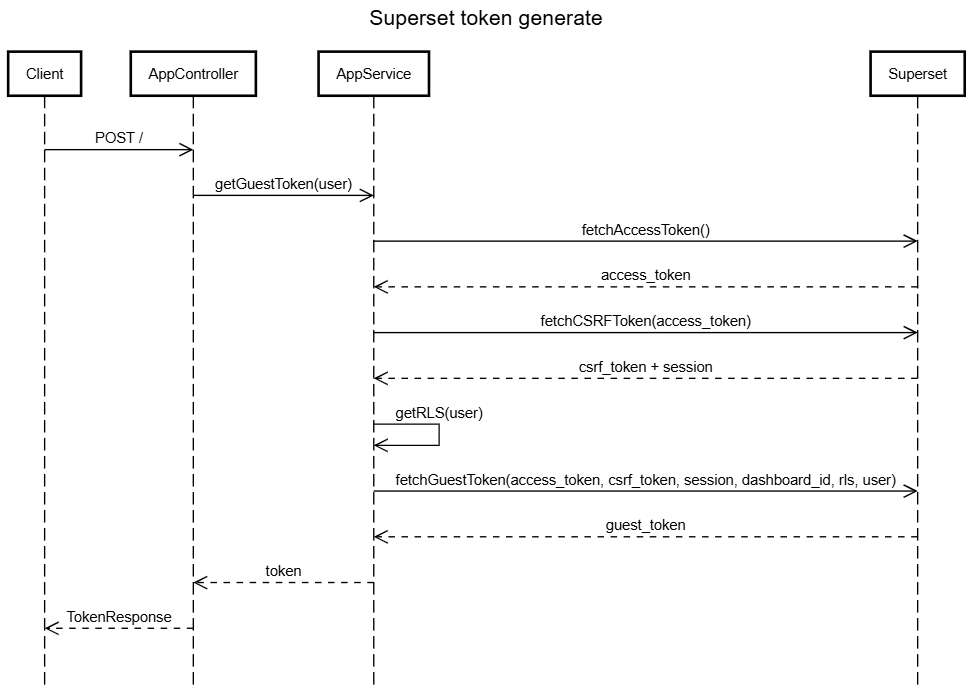

This NestJS application provides a service for generating guest tokens from Apache Superset. Guest tokens are used to embed Superset dashboards in external applications with row-level security (RLS) rules applied based on user permissions.
The application follows a standard NestJS architecture with:
app.controller.ts): Handles HTTP requestsapp.service.ts): Contains business logic for token generationReturns a simple "Hello World" message to verify the service is running.
Response:
Example :Hello WorldGenerates a guest token for embedding Superset dashboards.
Response:
Example :{
"status": "success",
"token": "eyJ0eXAiOiJKV1QiLCJhbGciOi..."
}Error Response:
Example :{
"status": "failure",
"error": "Error message details"
}The guest token generation process involves multiple steps:

The application uses a hardcoded user object in the controller:
Example :{
username: 'admin',
first_name: 'Admin',
last_name: 'User',
user_type: 'ADMIN',
organisation_id: 1,
locations: '1|||2' // Pipe-separated location IDs
}The service applies RLS rules based on user attributes:
The RLS rules are generated as SQL clauses:
Example :organisation_id IN (1)
practice_location_id IN (1,2)The service requires the following environment variables for Superset connection:
Example :interface SUPERSET_CONFIG {
url: string; // Superset base URL
username: string; // Superset admin username
password: string; // Superset admin password
}interface TokenResponse {
status: 'success' | 'failure';
token?: string;
error?: string;
}interface User {
username: string;
first_name: string;
last_name: string;
user_type: string;
organisation_id: number;
locations: string; // Pipe-separated location IDs
}interface DecodedUser extends Omit<User, 'locations'> {
locations: number[]; // Parsed location IDs
}type RLS = Array<{
clause: string;
}>;The service includes error handling at each step:
Hardcoded User: The current implementation uses a hardcoded admin user. In production, this should be replaced with actual user authentication.
Dashboard ID: The dashboard ID is hardcoded (30ddf642-4c36-40ee-ade2-fc77e6285a6c). This should be configurable or passed as a parameter.
Credentials: Ensure Superset credentials are stored securely using environment variables or a secrets management system.
To use this service in a frontend application:
Example :// Fetch guest token
const response = await fetch('http://your-service-url/', {
method: 'POST',
headers: {
'Content-Type': 'application/json'
}
});
const data = await response.json();
if (data.status === 'success') {
// Use the token to embed Superset dashboard
const dashboardUrl = `${SUPERSET_URL}/superset/dashboard/${DASHBOARD_ID}/?guest_token=${data.token}`;
// Embed in iframe
document.getElementById('dashboard-iframe').src = dashboardUrl;
}Install dependencies:
Example :npm installConfigure environment variables for Superset connection
Run in development mode:
Example :npm run start:devEnable debug logging by setting the log level in your NestJS configuration:
Example :Logger.setLogLevel(['debug']);Contains the access token from Superset login:
Example :interface FetchAccessTokenResponse {
access_token: string;
refresh_token?: string;
}Contains CSRF token and session cookie:
Example :interface FetchCSRFTokenResponse {
result: string; // CSRF token
session: string; // Session cookie
}Contains the final guest token:
Example :interface FetchGuestTokenResponse {
token: string;
}